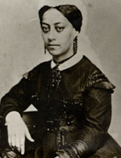

|

|

|
|
|
Where Mary Ellen Pleasant was born is very difficult to determine. Some
claim she was born on a Georgia cotton plantation and showed so much
promise that she was purchased by a slave master who sent her to Boston
to be educated. Another account states that she was born on a Virginia
plantation but does not explain how she got to Boston. In an interview
with Samuel Post Davis, printed in the Pandex of the Press (San
Francisco, January 1902), she said she was born in Philadelphia on
August 19, 1814, that her name was Mary Ellen William, her father a rich
merchant from the Sandwich Islands, and her mother a free black woman.
She was sent to Nantucket to live and be educated by a family named
Hussey. Most of those who have written about her in later years have
insisted that her mother was a slave and her father perhaps a Cherokee
indian.
A planter named Price bought Pleasant her freedom and sent her to Boston
to be educated. There she met Garrison and other abolitionists and
married Alexander Smith, reputedly a Cuban planter, who is said to have
left her a legacy of some $45,000 to assist the abolitionist cause.
Presumably shortly thereafter, she married John P. Pleasant
(Pleasants?), a former overseer on the Smith plantation, about whom
little is known.
They came to San Francisco in 1849 during the gold rush. It seems that
her reputation as a cook had preceded her, and she was offered $500 a
month for her services. In spite of the very attractive offer, she
refused and instead opened a restaurant and boarding house of her own.
Here boarded many of those who became prominent in the history of
California, among them David Broderick, William Sharon, David S. Terry
and Thomas Bell. She continued in this business until 1858. Her
activities are said to have included houses of assignation. She also
managed estates and made loans (at 10 percent a month), but in spite of
success she closed her business and moved back east. Some say she went
back to Boston, others that she went to Canada. Whether she met John
Brown in Canada is not certain; she was there at one time, and she and
John Pleasant bought a house in Chatham. The deed to this property was
in the collection of Boyd B. Stutter, who was secretary of the American
Legion, San Francisco, for a time.
For many years it was said that Mary Ellen Pleasant gave John Brown
$30,000 to help him finance the attack on Harpers Ferry. In this she was
supposed to be complying with the desire of her first husband, who had
insisted she spend a part of her inheritance for the freedom of slaves.
The available records do not reveal that John Brown ever had any large
sums of money. One of the largest amounts, $600, was given by one
Frances Jackson; others gave smaller amounts. It would seem that the
important problem is not whether Mary Ellen Pleasant gave $30,000, but
whether she was in Canada and contributed to John Brown's raid in any
way. He had probably left Canada before she arrived; in her own account
she did not say she went directly to Canada, but rather indicated she
went to Boston. This remarkable and mysterious woman probably did give
something to the undertaking, but how much is an open question. She
claimed that, disguised as a jockey, she went to Virginia to stir up the
slaves but could do little, for John Brown struck too soon. She was,
however, able to escape to New York and return to California.
She did not open another restaurant, but entered the employment of a
banker, Thomas Bell, as a housekeeper, because she could get large sums
of money from him for almost any reason. She managed the household,
spent money as she saw fit, and indeed is supposed to have planned as
well as controlled the "House of Mystery," a three-story mansard-roofed
mansion on Octavia Street.
Mary Ellen Pleasant was involved in many events in San Francisco,
especially the famous case of Sharon v. Sharon (1881). William Sharon
had made a fortune in Nevada mining and several other projects; he was a
former senator from Nevada and belonged to the group of young men who
had boarded at the Pleasant house. He met Sarah Althea Hill, it is said,
through Mary Ellen Pleasant. Hill lived in an apartment provided by
Sharon, but when he tired of her he had her removed. She, however,
claimed to be his wife and produced a certificate of marriage which he
insisted was not authentic. She then sued for divorce on the ground of
infidelity and demanded a division of the property. During the
protracted proceedings, she confessed that she had acted under
instructions from Pleasant, and the latter admitted that she had
advanced more than $5000 to Hill. A federal judge ruled that the
contract was a forgery and that the whole scheme had originated in the
mind of "this scheming, trafficking, crafty old woman," Pleasant.
Her notorious reputation as a keeper of houses of assignation and her
involvement in Sharon v. Sharon have obscured her earlier civil
rights activities in California. According to tradition, during the
1850s and 1860s she rescued slaves in rural areas where they were
illegally held. She aided in the fight to secure the passage of a state
law (1863) giving blacks the right of testimony in courts. Contemporary
newspapers and court records validate the claim that through her, black
people were able to ride on the city's street cars.
After the death of Thomas Bell, Pleasant stayed in the "House of
Mystery" until 1899 when she was ordered out. In 1902 she became ill and
was found by Mrs. L. M. Sherwood of San Francisco, moved to the Sherwood
residence, and remained under their care until her death. The end came
on January 11, 1904, and closed the career of one of the most
controversial figures in the history of San Francisco.
Source: Rayford W. Logan and Michael R. Winston, eds. Dictionary
of American Negro Biography (New York: W. W. Norton, 1983), 495-96.
|